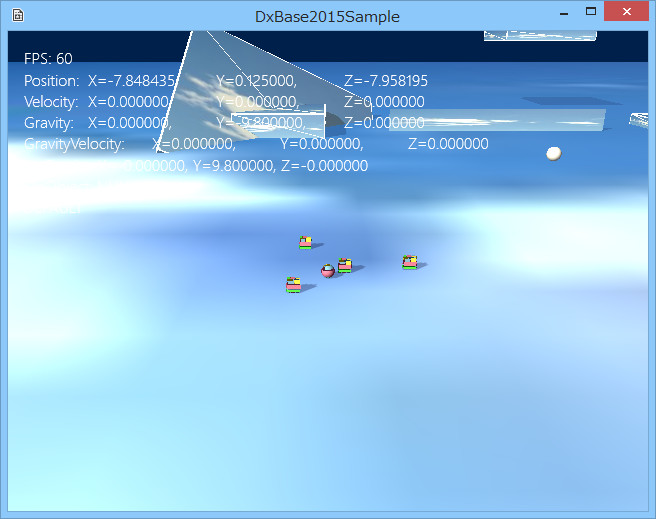
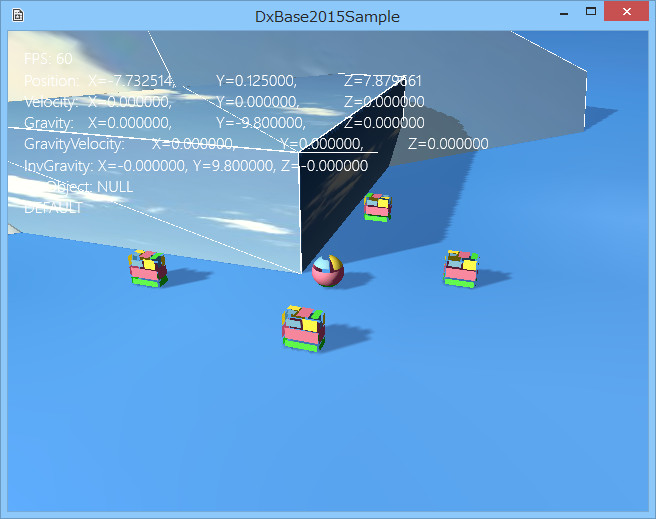

図2002a
コントローラを動かしてみると、チュートリアル008とほとんど同じなのがわかります。
//ビュー類の作成
void GameStage::CreateViews(){
//中略
//最初のビューにパラメータの設定
//オブジェクトカメラを使う場合は、以下
PtrView->ResetParamaters<Camera, MultiLight>(rect,
Color4(0.0f, 0.125f, 0.3f, 1.0f), 1, 0.0f, 1.0f);
//LookAtカメラを使う場合は以下
//コメントにする PtrView->ResetParamaters<LookAtCamera, MultiLight>(rect,
// Color4(0.0f, 0.125f, 0.3f, 1.0f), 1, 0.0f, 1.0f);
//中略
}

図2002b
今度はコントローラを動かすと、先ほどとは違う印象です。つまり、先ほど空中に浮かんでいた物体から見た状態の視線になっています。
//初期化
void SeekCamera::Create(){
//中略
//操舵系のコンポーネントをつける場合はRigidbodyをつける
auto PtrRegid = AddComponent<Rigidbody>();
//Seek操舵
auto PtrSeek = AddComponent<SeekSteering>();
PtrSeek->SetWeight(5.0f);
PtrSeek->SetUpdateActive(false);
//Arrive操舵
auto PtrArrive = AddComponent<ArriveSteering>();
PtrArrive->SetWeight(5.0f);
PtrArrive->SetUpdateActive(false);
//中略
//使用しているのはCameraである
auto PtrCamera = dynamic_pointer_cast<Camera>(GetStage()->GetCamera(0));
//LookAtCameraである
auto PtrLookAtCamera = dynamic_pointer_cast<LookAtCamera>(GetStage()->GetCamera(0));
if (!PtrLookAtCamera && PtrCamera){
//Cameraを使用してるならオブジェクトカメラに設定
PtrCamera->SetCameraObject(GetThis<SeekCamera>());
}
//中略
}
//カメラの向かう位置を得る
Vector3 SeekCamera::GetCameraTargetMotion(bool IsFar){
Vector3 CameraTarget(0, 1.25f, -4.0f);
auto PtrPlayer = GetStage()->GetSharedGameObject<Player>(L"Player", false);
if (PtrPlayer){
CameraTarget = PtrPlayer->GetComponent<Transform>()->GetPosition();
CameraTarget.y += 1.0f;
auto Rot = PtrPlayer->GetComponent<Transform>()->GetRotation();
Vector3 RotVec(sin(Rot.y), 0, cos(Rot.y));
RotVec.Normalize();
if (IsFar){
RotVec *= -1.0f;
}
else{
RotVec *= -4.0f;
}
CameraTarget += RotVec;
//使用しているのはCameraである
auto PtrCamera = dynamic_pointer_cast<Camera>(GetStage()->GetCamera(0));
//LookAtCameraである
auto PtrLookAtCamera = dynamic_pointer_cast<LookAtCamera>(GetStage()->GetCamera(0));
if (!PtrLookAtCamera && PtrCamera){
//Cameraを使用してるならカメラの注目点をプレイヤーに設定
PtrCamera->SetAt(PtrPlayer->GetComponent<Transform>()->GetPosition());
}
}
return CameraTarget;
}